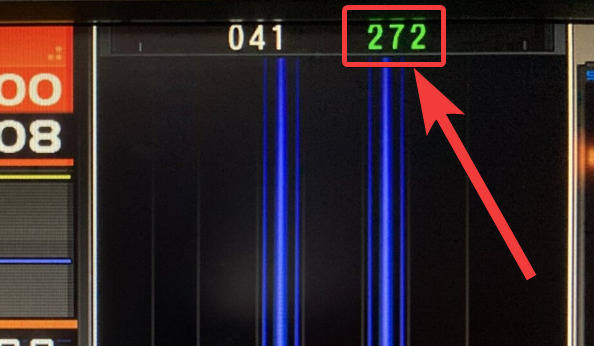
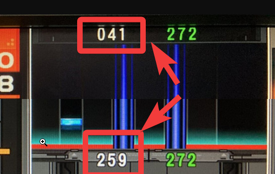
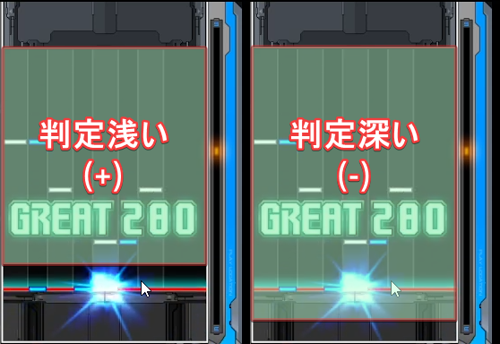
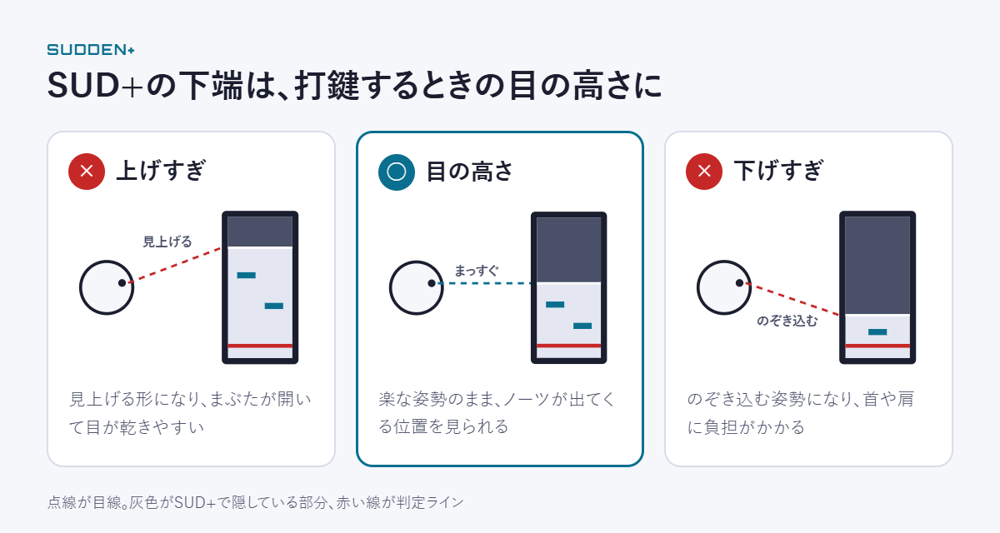

📑 文章目录（16 节）
本文将按段位介绍 IIDX（beatmania IIDX）的绿数字参考标准，并一并讲解白数字（SUD+・LIFT）以及判定位置的设定方法。
很多时候只要稍微调整一下设置，谱面就会变得清晰许多、也更容易发光（P-GREAT），所以遇到瓶颈期时更建议重新审视一遍自己的设置。
- 绿数字参考值大致为：初段〜五段 350 左右，六〜七段 320 左右，八段〜十段 300 左右，中传〜皆传 280 左右。每提升一个段位，数值大约下降 10
- 白数字（SUD+ 与 LIFT 之和）可以从 340 左右起步，再根据自己的视线高度进行微调。白数字基本不随段位高低产生明显差异
- 即便绿数字相同，把判定位置调深（往负数调）也能增加反应余量。以笔者的体感来说，判定 -1 大约相当于绿数字 10
- LIFT 应根据身高来用。抬得过高会导致应对低速和变速（Soflan）变弱，而且游玩途中无法取消，需多加注意
什么是绿数字与白数字
绿数字是“音符停留在视野中的时间”

绿数字表示音符从轨道顶端出现到抵达判定线所经过的时间。数值越大，看到谱面到按下按键之间的反应时间就越长（音符看起来越慢）；数值越小，反应时间就越短（音符看起来越快）。
倍速（HI-SPEED）只代表“音符下落的速度倍率”本身，而绿数字则综合了曲目 BPM 与遮罩长度，直接反映了实际看到的下落体感速度。只要换歌后调好倍速让绿数字一致，就能以完全相同的视觉体感游玩，因此在讨论速度设置时，通常都以绿数字作为统一标准。
白数字是“轨道遮罩遮挡的幅度”

白数字表示轨道上下两端被遮挡了多少。轨道遮罩（Lane Cover）共有以下 3 种：
| 名称 | 遮挡位置 | 主要用途 |
|---|---|---|
| SUD+（上遮罩/挡板） | 轨道上方 | 将可视区域对齐到视线高度 |
| LIFT（下抬高） | 轨道下方（连同判定线一起抬高） | 让判定线更接近视线，适合身高较高的玩家 |
| HID+（下遮罩） | 判定线正上方 | 遮挡判定线前的音符，使用人数较少 |
在本文中，我们将 SUD+ 与 LIFT 的白数字之和称为白数字合计。白数字合计越大，轨道上能看到音符的纵向长度就越短。
绿数字由 BPM、倍速和白数字共同决定
绿数字受以下 3 个因素决定：
- BPM：BPM 变为 2 倍时，绿数字减半（相同倍速下看起来会快一倍）
- 倍速（Hi-Speed）：调高倍速会使绿数字变小
- 白数字：轨道遮得越多，可视下落距离就越短，因此相同倍速下绿数字也会变小
也就是说，如果在拉低 SUD+（增加白数字）后仍想保持原本的视觉速度，就需要相应调低倍速。
在曲中 BPM 会发生变化的曲目（变速/Soflan）中，绿数字也会随之变化。关于在曲中调整倍速的“变速调速（Gear Change）”，请参阅以下文章的详细讲解。
各段位绿数字参考标准
我统计了 X（原 Twitter）话题标签“#弐寺のあなたの段位と緑数字教えてください（请分享你在 IIDX 的段位和绿数字）”中 2020 年（LM 筐体登场）之后的推文数据，以及 BPL 职业选手的设置数据（2023 年调查）。
| 段位 | 平均值 | 最小值 | 最大值 |
|---|---|---|---|
| 八段～十段 | 303 | 265 | 358 |
| 中传～皆传 | 286 | 255 | 326 |
| BPL 选手（S3） | 254 | 208 | 279 |
虽然七段以下的样本数较少，但从每升一段绿数字大约下降 10 的趋势来看，大致参考标准如下：
| 段位 | 绿数字参考值 |
|---|---|
| 一级以下 | 400 左右 |
| 初段～五段 | 350 左右 |
| 六段～七段 | 320 左右 |
| 八段～十段 | 300 左右 |
| 中传～皆传 | 280 左右 |
如果你的数值偏离上述范围太多，不妨试着重新调整一下。比合适速度慢太多就近乎于自我折磨（绑手玩法），而过快则可能会妨碍水平进步。
关于各段位本身的实力标准（能过哪些曲目就有望考过），可以参考《段位认定参考标准一览》。
如何确定绿数字
- 有余力去思考指法安排
- 不易受当天状态波动影响，发挥更稳
- 画面中同时显示的音符过多，高密度谱面难以读清
- 画面中显示的音符较少，高密度谱面更容易看清
- 思考指法的余量较少
- 状态不好时容易来不及反应
从普遍规律来看，随着玩家从新手成长为高手，绿数字会逐渐变小。因为水平越高，就越不需要刻意思考指法和手指怎么动，身体会条件反射般地跟上，也就不再需要那么多思考缓冲时间了。
需要重新调整的信号
遇到以下情况时，可以尝试微调绿数字：
| 遇到这种情况时 | 可以尝试的做法 |
|---|---|
| 高密度配置或同时押“看不清” | 调低绿数字（拉大音符间距，便于分辨） |
| 明明看清了但手指跟不上、SLOW 偏多 | 调高绿数字，或将判定位置调深 |
| 状态好和状态差的日子发挥落差很大 | 稍微调高绿数字（反应时间长一些会更稳定） |
| 没有余力去思考转盘和指法切换 | 调高绿数字 |
结合判定位置一起调整

将判定位置往正数调会使判定偏浅（偏上），往负数调则会使判定偏深（偏下）。判定越深，从看见音符到按下按键的缓冲余量就越长。
换句话说，就算绿数字完全一样，实际体感到的反应余量也会因判定位置而改变。以笔者的体感来说，判定 -1 大约相当于绿数字 10。在顶尖职业选手中，绿数字越小的选手，判定位置往往也调得越深。
| 选手（BPL S3） | 绿数字 | 判定位置 |
|---|---|---|
| U*TAKA | 208 | -3.05 |
| WELLOW | 217 | -2.90 |
| 46 | 236 | -2.30 |
将判定调到较深的位置（-1.5～-3.0 附近），让判定线附近形成近似 HIDDEN 的视觉效果、减少视野信息量的“WELLOW 流设置法（ういろうメソッド）”也因此广为流传。
关于判定位置本身的校准方法（如何看 FAST/SLOW，以及音画不同步时的修正方式），可以参考以下文章的详细讲解。
如何确定白数字（SUD+・LIFT）
- 视线不易上下晃动，读谱更稳定
- 能减轻音符移动带来的残影感
- 难以看清低速与变速（Soflan）段
- 难以辨识细微的错拍（ズレ）与跳拍切分
- 视觉上的判定区间显得更宽
- 容易看清低速与变速（Soflan）段
- 容易辨识细微的错拍（ズレ）与跳拍切分
- 视野较广，视线容易上下漂移
- 音符残影感较明显
白数字合计建议从 340 左右开始尝试
BPL 选手（S3）的白数字合计平均值大约在 340 左右。与绿数字不同，白数字并不会随着实力高低而改变，因此在拿不准的时候，先以 340 为基准，再慢慢调到自己看着最舒服的位置，基本不会踩坑。
SUD+ 对齐视线高度
SUD+ 和 LIFT 各自该设多少，会受到身高、视线高度以及站姿手型的影响。笔者最推荐的位置，是让 SUD+ 的下边缘正好落在游玩站姿下眼睛平视的高度附近。

如果拉得比视线高太多，眼皮会张得过大，眼睛容易干涩；拉得太低，则会不自觉弯腰低头去看，给颈部和肩部带来负担。
LIFT 根据身高使用（切勿抬得过高）
LIFT 是将判定线连同轨道底部一起向上抬高的设置，适合身高较高的玩家用来减少视线的上下移动幅度。如果个子很高却不用 LIFT，为了看清判定线就不得不弯腰驼背，很容易伤到脖子和腰。
不过，LIFT 千万不要抬得过高，需要注意以下两点：
- 应对低速与变速（Soflan）变弱：可视轨道变短后，在音符缓慢下落的段落里会很难把握音符之间的间距
- 游玩途中无法关闭：SUD+ 在打歌过程中可以轻松开关和微调，但 LIFT 几乎无法在曲中调整，导致应对变速曲的手段变少
比起单纯靠 LIFT 堆高白数字，更推荐做好分工：用 LIFT 校准视线高度，用 SUD+ 调整轨道可视长度。
此外，音符皮肤、判定文字、键光（Key Beam）的外观同样会影响视觉清晰度。BPL 职业选手的外观自定义设置汇总在以下文章中。
【S3】BPL 选手绿数字・白数字合计・判定位置一览
以下是我通过直播和视频整理出的 BPL（S3・2023 年）参赛选手的各项设置数据。由于选手们在现行赛季可能已做更改，请将其作为了解整体趋势的参考。
| NAME | 绿数字 | 白数字合计 | 判定位置 |
|---|---|---|---|
| 平均值 | 254 | 337 | -0.63 |
| 中位数 | 255 | 328 | -0.50 |
| ✨ APINA VRAMeS✨ | |||
| UCCHIE | 256 | 266 | -0.55 |
| WELLOW | 217 | 435 | -2.90 |
| CHP*1E | 252 | 304 | +0.00 |
| KENTAN | 250 | 393 | +0.10 |
| GiGO | |||
| CORIVE | 246 | 388 | -0.90 |
| NUCHIO | 258 | 360 | ? |
| CYBERX | 252 | 260 | ? |
| LOOT | ? | ? | ? |
| GAME PANIC | |||
| MIKAMO | 255 | 421 | -0.30 |
| PEACE | 254 | 258 | -0.35 |
| TAKA.S | 251 | 331 | +0.05 |
| FRIP | ? | ? | -1.75 |
| 🎩SILK HAT | |||
| SEIRYU | 263 | 370 | -1.30 |
| VELVET | 265 | 270 | +1.90 |
| LICHT | 248 | 417 | -0.50 |
| KIDO. | 257 | 289 | -1.05 |
| SUPERNOVA Tohoku | |||
| TATSU | 246 | 243 | -2.65 |
| NIKE. | 276 | 164 | -0.55 |
| TAKWAN | 259 | 320 | +1.20 |
| 46 | 236 | 522? | -2.30 |
| 🦾 TAITO STATION Tradz | |||
| KKM* | 247 | 441 | +0.45 |
| RIOO | 266 | 390 | +0.20 |
| 8S. | 260 | 194 | -0.40 |
| RAITO. | 279 | 267 | -0.20 |
| 🎳ROUND1 | |||
| U*TAKA | 208 | 490 | -3.05 |
| KUREI | 260 | 325 | -0.40 |
| 16VV | 255 | 430 | +1.00 |
| NAGACH | 250 | 411 | -1.05 |
| レジャーランド（LEISURE LAND） | |||
| 1-PIN | 253 | 390 | -1.35 |
| DINASO | 261 | 261 | -1.10 |
| G* | 265 | 194 | +1.15 |
| U76NER | 270 | 310 | -1.70 |
统计结果的中位数为：绿数字 255、白数字合计 328、判定位置 -0.50。绿数字高度集中在 200 出头到 270 左右，而白数字合计则在 160〜520 之间因人而异、跨度极大。由此不难看出，白数字并不是由实力决定，而是由个人体格与视觉偏好决定的。
DP（双打）的设置趋势
我也顺便调查了 DP 顶尖高分玩家的设置数据（2023 年调查）。
与 SP 相比，DP 玩家中有很多人倾向于尽量减小白数字，把轨道纵向可视长度拉到最大。这是因为纵向空间越长，音符之间的间距就越开，不仅更容易看清左右相距较远的同时押，也更容易分辨左右两侧轨道之间的微小时间差。
由于轨道更长会导致视觉上的体感速度偏快，因此 DP 玩家的绿数字平均值也在 280～290 左右，比 SP 更大一些。
关于绿数字的常见问题
绿数字代表什么意思？
绿数字表示音符从出现在轨道上到落至判定线为止的时间。数值越大音符看起来越慢，数值越小看起来越快。由于它综合了 BPM 与轨道遮罩量来体现实际视觉速度，换曲后只要调好倍速让绿数字保持一致，就能用相同的节奏体感进行游玩。
绿数字 340 算慢吗？
如果你在初段〜五段，340 正好在参考范围内（350 左右）。如果已经达到八段以上还在用 340，就比平均值（八段〜十段约 300）偏慢了。如果觉得高密度谱面看不清，可以试着稍微调低一点。
调低绿数字就能变强吗？
光靠调低数值并不会直接让你变强。而是随着水平提升，大脑不再需要花那么多时间思考，结果绿数字才自然而然降下来。不过如果一直保持远慢于参考值的速度，高密度谱面会很难看清，因此建议随着段位提升逐步往下调。
SLOW 偏多的时候应该调高绿数字吗？
如果明明看清了谱面却总按慢，可以试着调高绿数字，或者把判定位置调深（调往负数）。也有不少玩家保持较小的绿数字不变，通过把判定调深来弥补反应延迟。此外，FAST/SLOW 偏移也可能是判定时机本身不准导致的，建议一并查看判定时机调整的相关文章。
身高较高的话，LIFT 应该调多少合适？
并没有固定数值。只需把 LIFT 抬高到不用弯腰驼背就能自然看清判定线的高度，其余的可视区域长度交给 SUD+ 来调即可。如果单靠 LIFT 堆高白数字，在低速段和变速曲里会非常吃亏。
总结
绿数字通常会随着玩家进步而逐渐减小。平均值大致是八段～十段 300、中传～皆传 280，每升一段约下降 10；六～七段可以参考 320，初段～五段可以参考 350 左右。
白数字（SUD+ 与 LIFT 之和）可以从 340 左右开始，根据自己的视线高度逐步调整。近年来流行将判定位置适当调深，这样即便保持相同的绿数字，也能争取到更充裕的反应余量。
💬 读者评论与作者答疑（6 组对话）